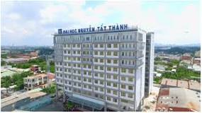

Đại học Nguyễn Tất Thành

Các nhóm ngành đào tạo
- Kinh tế: kế toán, quản trị kinh doanh, thương mại điện tử
- Xã hội nhân văn: ngôn ngữ anh, du lịch, quan hệ công chúng.
- Kỹ thuật công nghệ: KT điện-điện tử, công nghệ thông tin, CN kỹ thuật ô tô
- Sức khỏe: y khoa, dược, kỹ thuật xét nghiệm.
- Nghệ thuật:thanh nhạc, diễn viên.
Các ngành chủ chốt
| Số thứ tự |
Tên ngành |
Điếm chuẩn |
| 1 |
Công Nghệ Thông Tin |
20đ |
| 2 |
Y Dược |
24đ |
| 3 |
Kế Toán |
19đ |
| 4 |
Ngôn ngữ anh |
15đ |
| 5 |
diễn viên |
23đ |
Học phí tại Nguyễn Tất Thành
Ở đh Nguyễn Tất Thành được gói riêng cho từng nhóm ngành tính theo tín chỉ. Mỗi học kỳ một sinh viên thường học
trên dưới 20 tín chỉ. Mình liệt kê đơn giá học phí 1 tín chỉ từng nhóm ngành, các bạn tự tính toán nhé.
Sức khỏe: 1-1.4 triệu/tín chỉ
Công nghệ kỹ thuật: 700-1 triệu/tín chỉ
Khác: 800-1.3 triệu/tín chỉ
Một năm 40 tín chỉ nếu trung bình 1 triệu mỗi tín chỉ thì mức học phí là 40 triệu/năm. Đây là một mức học phí
khá cao ở TPHCM, các bạn cần tính toán trước khi chọn trường.
Theo mình tìm hiểu tuy học phí cao nhưng trường rất ít tăng học phí trong suốt 4 năm học. 1 năm trường học tới 3
học kỳ nên nếu học tốt có thể ra trường trong 3 năm thay vì 4 năm như các trường khác.
Cơ sở vật chất
- CS1: 04 Nguyễn Tất Thành, Quận 4 chủ yếu đào tạo nhóm ngành sức khỏe, kỹ thuật
- CS1: 04 Nguyễn Tất Thành, Quận 4 chủ yếu đào tạo nhóm ngành sức khỏe, kỹ thuật
- CS1: 04 Nguyễn Tất Thành, Quận 4 chủ yếu đào tạo nhóm ngành sức khỏe, kỹ thuật
- CS1: 04 Nguyễn Tất Thành, Quận 4 chủ yếu đào tạo nhóm ngành sức khỏe, kỹ thuật
Hầu hết cơ sở của đại học Nguyễn Tất Thành mới xây dựng còn mới.Phòng học đều có máy lạnh, mỗi cơ sở đều có khu tự
học, nghỉ ngơi, học nhóm, thư viện hiện đại. Trường có hẳn một tòa nhà khách sạn 5* dành riêng cho bạn học quản trị
khách sạn, du lịch. Ngoài ra còn có phòng gym, sân bóng đá lớn, ký túc xá.
Về cơ sở vật chất trường đạt 4* theo tiêu chuẩn QS Star của quốc tế. Tuy nhiên theo ý kiến các cựu sinh viên thì cơ
sở ở quận 4 và quận 7 chất lượng hơi tệ. Chỉ có các cơ sở mới thì ok. Thêm nữa nếu học ở quận 7 sẽ gặp tình trạng
nước ngập tới đầu gối khi trời mưa.
Chất lượng đào tạo tại NTT
Với rất nhiều ngành 20.000 sinh viên nên trường có gần 800 giảng viên cố định. Hầu hết là tiến sỹ và thạc sỹ được
đánh giá là tận tâm và nhiệt tình.
Nguyễn Tất Thành được xem là trường dân lập có chất lượng đào tạo tốt nhất ở TPHCM. Những năm gần đây các ngành hot
như Y khoa, CNTT, Logistic, Marketing có điểm chuẩn rất cao khó để vào. Nếu bạn đam mê các ngành này mà lực học chưa
đủ thì có thể chọn đại học Nguyễn Tất Thành.

Địa chỉ:300A Nguyễn Tất Thành, Phường 13, Quận 4, Thành phố Hồ Chí Minh 70000
Trường Đại học Nguyễn Tất Thành
Hotline:0798821404 hoặc 0901678433